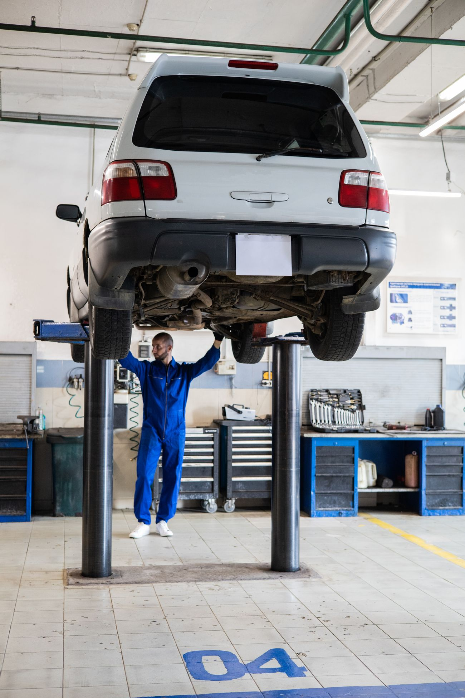

Диагностика
Компьютерная диагностика двигателя, диагностика подвески.
цена уточняетсяВыберите работу, укажите машину и свободное время. Запчасти — со своего склада или под заказ: подбор по VIN в той же заявке.

Фото — иллюстрация (Pexels), не автотехцентр «Корона»
Сайт обещает онлайн-запись, но записаться можно только звонком; последняя новость — 2024 года, а браузеры могут предупреждать о сертификате сайта.
Запись на пост за 4 шага с телефона; подбор запчастей по VIN — в той же форме.
Заявка уходит мастеру в Telegram; воскресенье и нерабочие часы не предлагаются, цены и наличие запчастей мастер уточняет перед визитом.
✦Это концепт. С вашими фото и правками будет ещё лучше
Перечень — с текущего сайта. Цены на сайте не опубликованы («по телефону») — уточняются.
Компьютерная диагностика двигателя, диагностика подвески.
цена уточняетсяРегулировка углов установки колёс.
цена уточняетсяРулевые тяги и наконечники, шаровые, сайлентблоки, ступичные подшипники, ШРУСы, стойки и амортизаторы, проточка тормозных дисков.
Снятие и установка двигателя и КПП, капремонт, ремень ГРМ, генераторы, стартеры, промывка форсунок.
Удаление ошибок (Check Engine), ремонт цепей, шлейфов руля и датчиков ABS, установка сигнализации.
Замена масла в двигателе и КПП, фильтров, ремней, колодок, тормозной жидкости; замер компрессии.
С текущего сайта: запчасти и расходники для японских и европейских автомобилей — в наличии и под заказ.
Цитаты — дословно с Яндекс Карт, без имён.
«Делаю здесь подвеску уже у второго своего авто. Ребята молодцы и по диагностики и по ремонту. Все четко без лишних навязанных услуг.»Отзыв с Яндекс Карт
«Проверял ходовую, прогнали машинку на стенде, выдали вердикт что стойкам ещё работать и работать, сайлентблоки скоро своё отработают, а вот передние колодки под замену срочно. У них всё и поменял. Быстро, аккуратно, цены норма.»Отзыв с Яндекс Карт
«Отличные ребята ! Для меня главное то ,что честные, не разу ещё за всё время не придумывали мне несуществующих поломок !»Отзыв с Яндекс Карт
В рабочей версии отзывы подтягиваются с Яндекс Карт; на странице отзывов сейчас 3 ответа владельца на 50 отзывов.
Пн–Пт 9:00–19:00, Сб 10:00–17:00, Вс — выходной (время красноярское). Цены уточняются.
Въезд — со стороны ул. Семафорной. На некоторых картах строение значится под старым наименованием — ориентируйтесь на Семафорную, 201в.